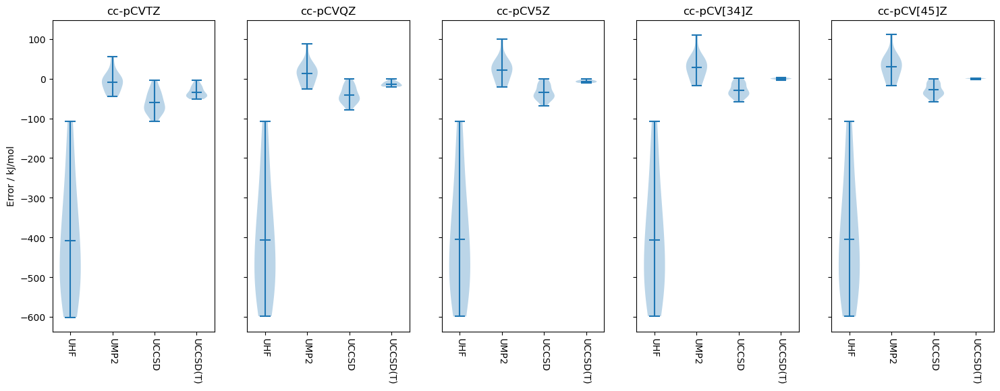

Thermochemical benchmark: atomisation of closed shell molecules with core correlation
Bak et al., doi:10.1063/1.1357225 and doi:10.1063/1.481544
[1]:
import pymolpro
import pandas as pd
[2]:
backend = 'local' # If preferred, change this to one of the backends in your ~/.sjef/molpro/backends.xml that is ssh-accessible
project_name = 'Bak2000_atomisations'
parallel = None # how many jobs to run at once
[3]:
methods = {"HF": ["hf", "uhf"],
"MP2": ["mp2", "ump2"],
# "MP3": ["mp3", "ump3"],
# "MP4": ["mp4", "ump4"],
"CCSD": ["ccsd", "uccsd"], "CCSD(T)": ["ccsd(t)", "uccsd(t)"], }
bases = ['cc-pCVDZ', 'cc-pCVTZ', 'cc-pCVQZ', 'cc-pCV5Z']
[4]:
db = pymolpro.database.load("Bak2000_atomisations")
[5]:
results = {}
for method in methods:
results[method] = {}
for basis in bases:
results[method][basis] = pymolpro.database.run(db, methods[method], basis, location=project_name,
backend=backend,
preamble="core,small", parallel=parallel)
[6]:
for method in methods:
for result in pymolpro.database.basis_extrapolate(results[method].values(), results['HF'].values()):
results[method][result.basis] = result
for basis in results[method]:
if basis not in bases: bases.append(basis)
[10]:
pd.set_option('display.precision', 2)
method_errors=pymolpro.database.analyse([results[method]['cc-pCV[45]Z'] for method in methods], db, 'kj/mol')[
'reaction statistics']
with open(project_name + '.method_errors.tex', 'w') as tf:
tf.write('\\ifx\\toprule\\undefined\\def\\toprule{\\hline\\hline}\n\\def\\midrule{\\hline}\n\\def\\bottomrule{\\hline\\hline}\\fi') # or \usepackage{booktabs}
tf.write(method_errors.style.format(precision=2).to_latex(hrules=True,multicol_align='c',caption='Method errors'))
method_errors
[10]:
| UHF | UMP2 | UCCSD | UCCSD(T) | |
|---|---|---|---|---|
| cc-pCV[45]Z | cc-pCV[45]Z | cc-pCV[45]Z | cc-pCV[45]Z | |
| MSD | -405.05 | 30.04 | -28.48 | 0.08 |
| STDEVD | 143.84 | 32.64 | 16.43 | 1.12 |
| MAD | 405.05 | 35.11 | 28.50 | 0.90 |
| MAXD | 598.79 | 112.20 | 58.55 | 2.45 |
| RMSD | 428.32 | 43.60 | 32.62 | 1.09 |
[8]:
pd.set_option('display.precision', 2)
basis_errors=pymolpro.database.analyse([results['CCSD(T)'][basis] for basis in bases], db, 'kj/mol')[
'reaction statistics']
with open(project_name + '.basis_errors.tex', 'w') as tf:
tf.write('\\ifx\\toprule\\undefined\\def\\toprule{\\hline\\hline}\n\\def\\midrule{\\hline}\n\\def\\bottomrule{\\hline\\hline}\\fi') # or \usepackage{booktabs}
tf.write(basis_errors.style.format(precision=2).to_latex(hrules=True,multicol_align='c',caption='Basis errors'))
basis_errors
[8]:
| UCCSD(T) | |||||||
|---|---|---|---|---|---|---|---|
| cc-pCVDZ | cc-pCVTZ | cc-pCVQZ | cc-pCV5Z | cc-pCV[23]Z | cc-pCV[34]Z | cc-pCV[45]Z | |
| MSD | -103.07 | -34.00 | -13.46 | -6.61 | -14.66 | -0.23 | 0.08 |
| STDEVD | 37.19 | 13.58 | 5.63 | 3.08 | 8.39 | 2.15 | 1.12 |
| MAD | 103.07 | 34.00 | 13.46 | 6.61 | 14.74 | 1.68 | 0.90 |
| MAXD | 155.71 | 51.58 | 20.15 | 10.71 | 29.53 | 4.01 | 2.45 |
| RMSD | 109.18 | 36.45 | 14.52 | 7.25 | 16.76 | 2.10 | 1.09 |
[9]:
import matplotlib.pyplot as plt
methods_pruned = [method for method in methods if method != 'HF']
bases_pruned = ['cc-pCVTZ', 'cc-pCVQZ', 'cc-pCV5Z', 'cc-pCV[34]Z', 'cc-pCV[45]Z']
fig, panes = plt.subplots(nrows=1, ncols=len(bases_pruned), sharey=True, figsize=(18, 6))
for pane in range(len(bases_pruned)):
data = []
for method in methods_pruned:
data.append(
pymolpro.database.analyse(results[method][bases_pruned[pane]],
db,'kJ/mol')['reaction energy deviations'].to_numpy()[:, 0]
)
panes[pane].violinplot(data, showmeans=True, showextrema=True, vert=True, bw_method='silverman')
panes[pane].set_xticks(range(1, len(methods_pruned) + 1), labels=methods_pruned, rotation=-90)
panes[pane].set_title(bases_pruned[pane])
panes[0].set_ylabel('Error / kJ/mol')
plt.savefig(project_name + ".violin.pdf")
